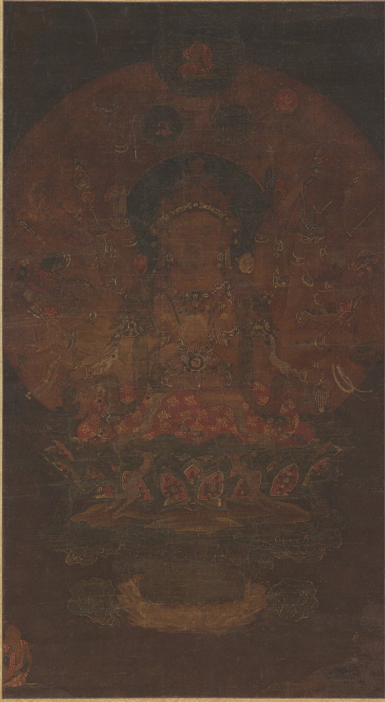
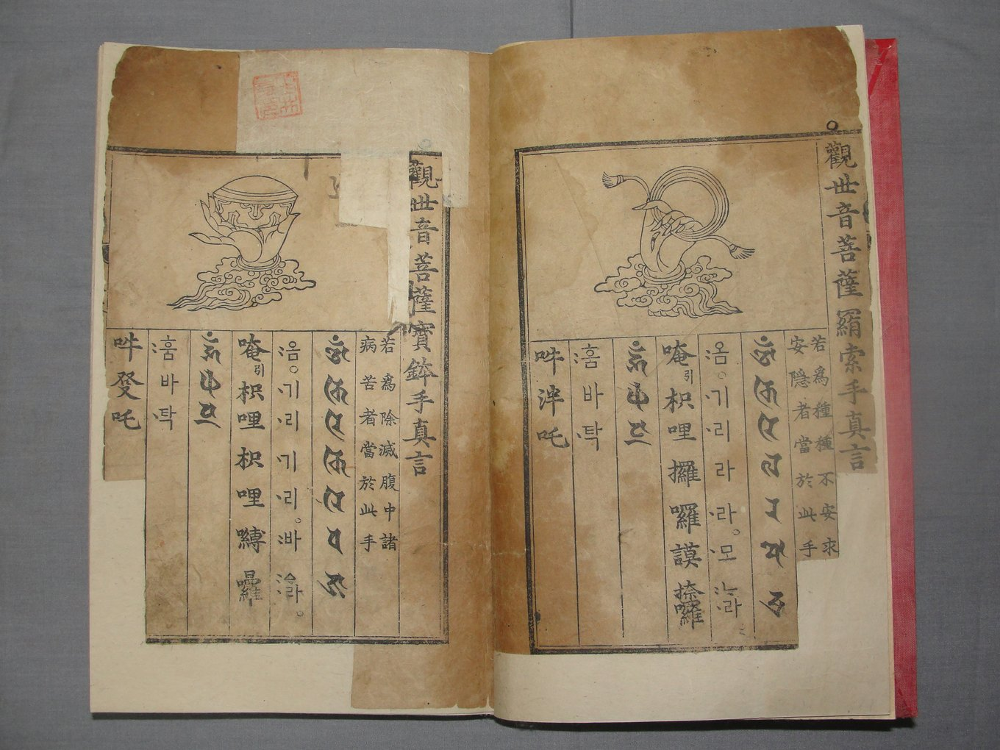
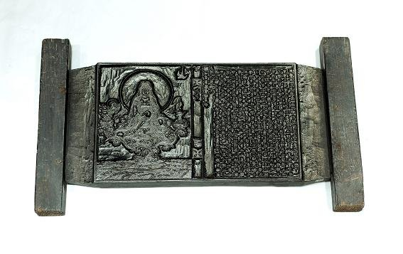
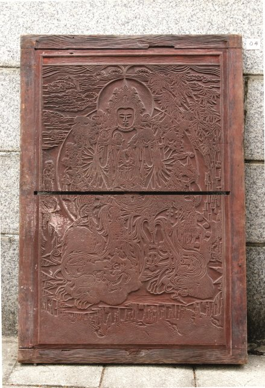

천수대비주(千手大悲呪)는 천 개의 손과 천 개의 눈으로 중생을 살피고 건지는 관세음보살의 크나큰 자비심을 담은 다라니입니다. 우리에게는 《천수경》의 중심인 신묘장구대다라니(神妙章句大陀羅尼)로 널리 알려져 있으며, 오늘날 거의 모든 법회와 의식이 이 다라니를 외우는 것으로 문을 엽니다. 대한불교밀인종은 대불정수능엄신주와 더불어 천수대비주를 외우는 주력(呪力) 수행을 중요한 방편으로 삼습니다.
천수천안(千手千眼)은 관세음보살의 자비가 미치지 않는 곳이 없음을 보여 주는 모습입니다. 천 개의 눈은 괴로워하는 중생을 하나도 빠짐없이 살피는 지혜를, 천 개의 손은 그 모두에게 빠짐없이 손을 내미는 방편을 뜻합니다. 그래서 천수관음을 크게 자비로운 관음, 곧 대비관음(大悲觀音)이라고도 부르고, 그분의 다라니를 대비주(大悲呪)라 합니다.
경에 따르면 관세음보살은 아득한 옛적 천광왕정주여래(千光王靜住如來)께 이 다라니를 처음 들었습니다. 그때 막 보살의 첫 자리[初地]에 있던 관세음보살은 다라니를 한 번 듣고 단숨에 여덟째 자리[八地]로 뛰어올랐고, “앞으로 모든 중생을 이롭고 편안하게 할 수 있다면 지금 곧 이 몸에 천 개의 손과 천 개의 눈이 갖추어지이다”라고 서원하자 그 자리에서 천수천안이 갖추어졌다고 합니다.

지금까지 알려진 고려불화 가운데 하나뿐인 천수관음보살도입니다. 오랜 세월에 빛이 많이 바랬지만, 화면을 가득 채운 둥근 광배 안에 마흔 개 남짓한 큰 손이 저마다 다른 지물을 들고 있고, 그 사이사이로 눈이 그려진 작은 손들이 촘촘히 펼쳐져 있습니다. 왼쪽 아래에는 합장한 선재동자가 보살을 우러러보고 있습니다.
부처님께서 보타락가산 관세음보살의 궁전에서 수많은 보살과 성문, 천신들과 함께 계실 때, 관세음보살이 일어나 중생을 편안하고 즐겁게 하고, 온갖 병을 없애며, 바라는 바를 속히 이루게 하는 다라니가 있으니 설하도록 허락해 주시기를 청하였습니다. 부처님께서 허락하시자 관세음보살은 합장하고 서서 크게 자비로운 마음으로 웃음을 머금은 채 이 다라니를 설하였습니다.
다라니의 첫머리는 “나모라 다나다라야야”, 곧 불 · 법 · 승 삼보(三寶)에 귀의한다는 말로 시작합니다. 이어 관세음보살께 귀의하고, 목이 푸른 관음[靑頸觀音]을 비롯한 여러 모습의 관세음보살을 차례로 부르며, 탐욕 · 성냄 · 어리석음의 세 가지 독을 녹이고 깨달음을 이루게 해 달라는 간절한 바람을 담고 있습니다.
경에서 대범천왕이 이 다라니의 모습을 일러 달라고 청하자, 관세음보살은 소리나 글자가 아니라 마음으로 그 모습을 일러 줍니다. 다라니의 참모습은 바로 다음과 같은 마음이라는 것입니다.
그래서 경은 다라니를 외우려는 이에게 먼저 모든 중생에게 자비로운 마음을 일으키고, 관세음보살을 따라 서원을 세우라고 이릅니다. “나무대비관세음 원아속지일체법(모든 법을 속히 알기를)”으로 시작하는 십원(十願)과, 칼산을 향하면 칼산이 저절로 꺾이고 화탕을 향하면 화탕이 저절로 사라지기를 바라는 육향(六向)은 오늘날 《천수경》에도 그대로 담겨 있습니다.
경은 이 다라니를 정성껏 지니는 이가 받는 공덕을 자세히 밝힙니다. 그 가운데 가장 널리 알려진 것이 열다섯 가지 나쁜 죽음을 면하고 열다섯 가지 좋은 삶을 얻는다는 말씀입니다.
또 스무하루[三七日] 동안 계를 깨끗이 지니며 이 다라니를 외우면 반드시 바라는 바를 이룬다고 하였고, 다라니를 외우는 이를 관세음보살이 천 개의 눈으로 비추어 보고 천 개의 손으로 지켜 준다고 하였습니다. 다만 다라니를 의심하는 마음이 있으면 작은 허물조차 녹지 않는다고 하여, 무엇보다 믿고 정성을 다하는 마음을 앞세웠습니다.
우리가 날마다 읽는 《천수경》은 가범달마가 옮긴 경을 바탕으로 하되, 우리 불교의 의식에 맞게 여러 진언과 게송, 참회문과 발원문을 덧붙여 엮은 것입니다. 입으로 지은 업을 맑히는 정구업진언으로 시작하여 경을 여는 게송과 진언을 지나, 관세음보살께 다라니를 청하는 계청과 십원 · 육향을 거쳐 신묘장구대다라니에 이릅니다. 이어 도량을 찬탄하고 지난 허물을 참회하며, 준제진언과 여래십대발원문, 네 가지 큰 서원[四弘誓願]으로 마무리합니다.
이처럼 《천수경》은 몸과 입과 마음을 맑히고, 자비를 일으키고, 참회하고, 서원을 세우는 수행의 전 과정을 짧은 한 편에 담고 있습니다. 그래서 예불과 법회, 재(齋)와 기도 등 거의 모든 의식에 앞서 이 경을 읽으며, 불자들이 가장 먼저 외우는 경전이 되었습니다.
천수관음 신앙은 통일신라 초에 관련 경전이 들어온 뒤 널리 퍼졌습니다. 《삼국유사》에는 경덕왕 때 경주 한기리에 살던 희명(希明)이라는 여인의 이야기가 전합니다. 다섯 살 난 아이가 갑자기 눈이 멀자 희명은 아이를 데리고 분황사 법당 벽에 그려진 천수대비 앞으로 가서 아이에게 노래를 지어 빌게 하였고, 마침내 아이가 눈을 떴다고 합니다. 이때 부른 향가가 〈도천수대비가(禱千手大悲歌)〉입니다.
고려 시대에는 천수관음상과 천수관음 그림이 조성되고 《천수경》과 관련한 발원문이 남아, 천수관음 신앙이 깊이 뿌리내렸음을 보여 줍니다. 위의 고려 천수관음보살도와 함께, 서울 흥천사의 금동천수관음보살좌상처럼 마흔두 개의 손을 갖춘 보살상이 지금까지 전합니다. 천수관음은 중생 하나하나를 구하는 보살이면서 동시에 나라를 지키는 원력을 지닌 보살로도 받들어졌습니다.

1485년(성종 16)에는 인수대비의 명으로 학조 스님이 《오대진언(五大眞言)》을 펴냈습니다. 사십이수진언 · 신묘장구대다라니 · 수구즉득다라니 · 대불정다라니 · 불정존승다라니의 다섯 진언을 범자(梵字)로 적고, 그 소리를 한자와 한글로 나란히 달아, 글을 깊이 배우지 못한 백성도 진언을 쉽게 익혀 외울 수 있도록 한 것입니다. 관세음보살이 마흔두 손에 저마다 무엇을 들고 있는지 그림으로 보여 주고 그 아래 진언을 적은 사십이수진언은, 천 개의 손이 지닌 자비의 방편을 한눈에 보여 줍니다.
《오대진언》은 이후 지리산 철굴, 묘향산 도솔암, 황해도 심원사, 풍기 철암, 은진 쌍계사 등에서 거듭 간행될 만큼 널리 읽혔으며, 한자음을 당시의 실제 소리대로 한글로 적은 책이라는 점에서 국어사 연구에도 귀한 자료가 됩니다.

《천수경》은 고려 중기부터 유통되기 시작하여 조선 시대에 들어 가장 많은 판본을 남긴 경전이 되었습니다. 범어사의 천수 책판은 1676년 감로사에서 펴낸 것을 범어사로 옮겨 다시 간행한 것으로, 당시 널리 읽히던 《천수경》을 대중에게 펴기 위해 만든 목판입니다. 신묘장구대다라니만을 한 장의 큰 판목에 새겨 붉은 주사(朱砂)로 거듭 찍어 낸 다라니판도 전하고 있어, 이 다라니를 몸에 지니고 집에 모시며 복을 빌던 마음을 짐작하게 합니다.

사자좌 위에 앉은 천수관음보살을 선재동자가 합장하여 우러르는 장면을 새긴 목판입니다. 1874년에 태어난 순종의 수명장수를 빌어 수놓아 만든 관음보살도(1875)와 모습이 닮아, 그 밑그림이 되었을 것으로 여겨집니다. 조선 말 왕실에서도 천수관음께 의지해 복을 빌던 신앙이 이어졌음을 보여 줍니다.
오늘날에도 신묘장구대다라니는 예불과 각종 법회, 기도와 재의 첫머리에서 빠짐없이 독송되며, 이 다라니를 거듭 외우며 정진하는 대비주 기도가 여러 사찰에서 이어지고 있습니다. 대한불교밀인종 또한 천수대비주를 대불정수능엄신주와 함께 외우는 주력 수행을 통해, 관세음보살의 크나큰 자비를 제 마음에 새기고 이웃에게 회향하고자 합니다.